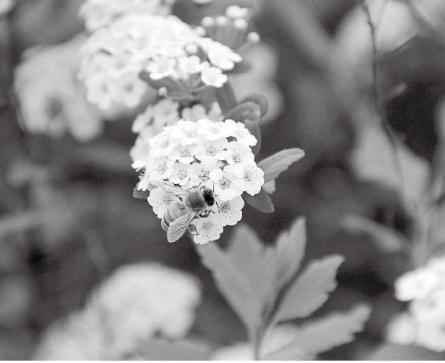
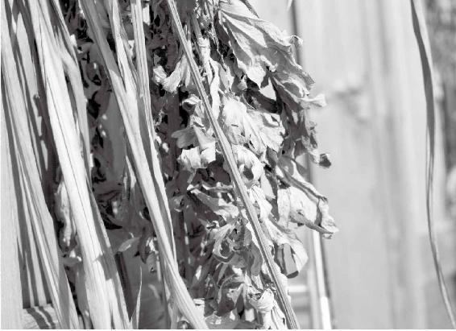

北方游牧民族有一个生活特点——逐水草而居。他们没有固定的居处，搭个帐篷、蒙古包就能住了。他们吃的是什么？就是我们现在说的牛奶之类的乳食。
乳食是北方人生活当中必不可少的饮品或者食品，包括它的衍生品，如奶皮子、奶酪、奶油等。这些食品一方面是他们生活的必需品，但同时也会生出一些相关的疾病。
经文：
北方者，天地所闭藏之域也。其地高陵居，风寒冰冽。其民乐野处而乳食，脏寒生满病，其治宜灸焫。故灸焫者亦从北方来。
北方的地气是“闭藏”
古代的北方就是蒙古
梁冬：下面我们讲北方，“北方者，天地所闭藏之域也。其地高陵居，风寒冰冽”。
徐文兵：我们说的这个北方，就是从中央往北，相当于现在的内蒙地区。在汉朝，汉武帝派霍去病去攻打匈奴，一直打到哪儿？打到了现在贝加尔湖这个地区，从而蒙古有了漠南和漠北之分，而《黄帝内经》上说的北方大概也延伸到了这里。
梁冬：我觉得汉朝人比较勇猛，南方人能一直打到北方去，但自此之后，中国历史上就很少有南方人把北方人给消灭掉的了。
徐文兵：明朝有！他们把蒙古人又赶到那个大漠，这也算北伐了。为什么明朝最后定都在北京呢？也是为了震慑蒙古。
中国中部正北这个地区的特点是什么？北方的秋天是收，而冬天是闭藏，正所谓“水冰地坼，无扰乎阳”。
中国中部正北这个地区的特点是什么？北方的秋天是收，而冬天是闭藏，正所谓“水冰地坼，无扰乎阳”。
游牧民族，逐水草而居
梁冬：“天地所闭藏之域也。其地高陵居，风寒冰冽，其民乐野处而乳食”，人们都喜欢在野外生存，吃各种乳制品。
徐文兵：北方，“天地所闭藏之域也”。北方人类似于现在说的游牧民族，他们以前是匈奴，逐水草而居。
北方人类似于现在说的游牧民族，他们以前是匈奴，逐水草而居。
梁冬：就是牛根生他们那个地方的吧？
徐文兵：对。这个地方的人们“乐野处而乳食”，为什么？诗歌里说，“天苍苍，野茫茫，风吹草低见牛羊”，内蒙古草原，首先是个高原，比黄土高原还高。
我上次说了黄土高原——山西，比北京要高1000米，蒙古高原呢，比黄土高原还要高。我们开车从包头、呼市往北，要翻过大青山。这大青山就是阴山，翻过这座山，才能感受到什么是真正的蒙古草原。所以，我国的北方是长草不长树的。
而且，这个地方还有一个特点。我们上次说西方人是陵居，掏个窑洞就能住，可在北方没法儿掏窑洞。所以，当地形成的这种风俗习惯叫“乐野处而乳食”，就是说住大蒙古包。
蒙古包不像现在的野战帐篷那样，四棱方角，大风一吹一下儿都能掀走。它是圆圆的，里边全是毡子、毯子，而且墙壁上挂的也是纯毛的羊毛毯，里面用牛粪点炉子，非常的温暖。所以，古书上说“乐野处”，不是说北方人裸居在外面，他们有自己的房屋。
北方人的饮食有什么特点
徐文兵：北方游牧民族有一个生活特点——逐水草而居。他们没有固定的居处，搭个帐篷、蒙古包就能住了。他们吃的是什么？就是我们现在说的牛奶之类的乳食。
乳食是北方人生活当中必不可少的饮品或者食品，包括它的衍生品，如奶皮子、奶酪、奶油等。这些食品一方面是他们生活的必需品，但同时也会生出一些相关的疾病。
梁冬：所以说，中原地区的朋友因为喝牛奶过多，身体会出现了各种问题，“脏寒生满病”。
中原地区的朋友因为喝牛奶过多，身体会出现了各种问题，“脏寒生满病”。
徐文兵：所以，为什么我总在劝说身处内陆的人少喝牛奶？
这是因为在北方生活的人，长期处于高寒的生活环境，肾精闭藏得比较足，肾精所化出来的消化酶、消化液也相对足，所以喝进去的牛奶，对北方人来说很好消化。可是到了南方或者是到了东方，人们肾精本来闭藏就不足，消化能力差，再喝牛奶，就不容易适应。尤其是中原地区的人喝奶，效果就更差。
梁冬：嗯。只能在喝奶的时候撒点胡椒面儿。
徐文兵：肉桂、荜拨（bì bō）、干姜，都可以用。
梁冬：所以，在广东吃奶叫姜撞奶，要把姜汁跟奶混到一起吃。
徐文兵：这都是从生活中总结出来的经验。
都是牛奶惹的祸——“寒而生满病”
心气寒，人就容易抑郁
梁冬：“脏寒生满病”，那什么叫“满病”呢？
徐文兵：先说脏寒吧。“脏”是五脏六腑里边的五脏。脏，本来是藏精气而不泄，是一种收敛闭塞的状态。如果摄入过多没有消好、化好的东西进去，就会让脏的功能削弱。
“脏寒”表现出来最让人讨厌的一个症状是什么？就是心脏寒。
梁冬：心都凉了。
徐文兵：牛奶喝不好容易喝出毛病，比如说心寒。
牛奶喝不好容易喝出毛病，比如说心寒。
如果一个人心寒了，就觉得活着没意思，对什么都没有兴趣。
我的一个病人，他是中国人，到日本留学、工作。他说，我来找你看病前的状态是：你给我搬来一座金山，我没兴趣要；你拿斧子拿刀子砍我，我也无所谓。哀莫大于心死，他就是这种状态。
如果一个人心寒了，就觉得活着没意思，对什么都没有兴趣。
所以说，长期喝乳食，不消不化的结果就是心脏寒。心脏寒的物理表现是什么？心率慢，跳不起来。心理表现是什么？心气儿低，热乎不起来，活得没意思。再寒一点儿，人就开始变得狠、毒，因为身体里的阴寒之气凝滞得太厉害了。
这种人往往容易自残。他去刺自己的胳膊，看血流出来以后，心里就释然了，好像心里那个毒素放出来了。自残时，他获得的是一种生理上的快感，觉得很舒服。
老喝牛奶的人，前列腺一般不好
徐文兵：牛奶喝得太多，不仅会让我们的身体积攒太多阴寒的东西，而且还会对其他脏器造成不好的影响。
比如说肾，肾主封藏，主水，如果肾不封藏，人就会漏精、漏尿，就是说憋不住尿，但如果肾封藏得太过，又会尿不出来。所以说，老喝牛奶的人会出现很严重的前列腺问题，像前列腺肥大、前列腺囊肿，尿不出尿来。
老喝牛奶的人会出现很严重的前列腺问题，像前列腺肥大、前列腺囊肿，尿不出尿来。
梁冬：好可怜。
徐文兵：这就是脏器寒凝造成的。
肝寒、胆寒怎么办
梁冬：那肝寒呢？
徐文兵：肝是主藏血的，除此之外，肝还有个特点，放血！该放血的时候放，该藏血的时候藏。如果身体过寒，肝的功能就只有藏而没有放，只有曲而没有张、没有直。肝和胆互为表里，所以肝寒的人，往往也会胆寒。
很多人晚上莫名恐惧，睡不着觉，得开着灯，身边得躺个人才踏实，这就是胆寒。那要怎么治？中医有个方子，叫温胆汤。
很多人晚上莫名恐惧，睡不着觉，得开着灯，身边得躺个人才踏实，这就是胆寒。
梁冬：温胆汤，拿什么来温胆呢？
徐文兵：温胆汤里面有几味药，首先有茯苓，或者叫茯神，还有半夏、陈皮、生姜等，用这些化阴寒、化滞痰的中药，让人的肝胆热乎起来。
实在不行，就喝两口烧酒壮壮胆，酒壮怂（sǒng）人胆嘛。所以说，老喝牛奶的内蒙人酒量都特别大。到内蒙喝酒，人家一端酒碗，你要一接，就得喝倒了才算。你要不接，人家就不停地给你上。
梁冬：所以，传说中“牛奶解酒”是有道理的。
徐文兵：这个酒的热性和牛奶的阴寒之性，恰好可以平衡一下。要是光喝牛奶，不喝烈酒，而是喝点儿啤酒，更寒！
梁冬：再来点儿冰镇啤酒，更厉害。再吃点海鲜，哇，真是有够狠的。
非典的病就是肺寒
梁冬：那肺寒是什么表现呢？
徐文兵：2003年非典时期人得的病啊，都是肺寒。什么叫肺寒？肺泡里有很多痰，如果肺脏过寒，这种浊血出不来，人到了最后都得窒息而死。
2003年非典时期人得的病啊，都是肺寒。什么叫肺寒？肺泡里有很多痰，如果肺脏过寒，这种浊血出不来，人到了最后都得窒息而死。
梁冬：所以要插呼吸机。
徐文兵：呼吸机到最后都没用了。呼吸机工作原理是什么？只有肺泡工作还正常的时候，用呼吸机才能一张一合地带动它动一下。要是肺泡都不起作用了，呼吸机上10台都没用。
在医院，气管切开，插呼吸机，这就是抢救。为什么气管要切开？就因为怕气管、支气管里堵着脏东西，影响空气的流入。但如果把这些问题都解决了，气管切开了，空气也能靠呼吸机吸进抽出，可肺部还是不工作，是什么原因？肺寒！
梁冬：当时中医治疗非典是用什么方法？
徐文兵：中医首先是化湿、化痰。红叶老师那会儿还被中医管理局请去介绍他治疗非典的经验。我当时给北京市政府写了一封请战书。结果，市政府电脑自动回信：“感谢您对市政府工作的支持，请等通知”，最后也没通知我，我就囚在家里三个月写了本书。
据红叶老师介绍，他是用“甘露消毒丹”来治疗非典的，运用的是化湿、化痰、化浊的方法。我有几个大学同学是东方医院的，他们上非典第一线，发现有的大夫就用小青龙汤。小青龙汤是《伤寒论》里常用的方子，里面配伍是什么？麻黄、桂枝、细辛、五味子，都是一些比较温热，能够散阴寒的中药。有喘憋、出不来气的人，是肺寒，吃这些药恰好对症。
我有几个大学同学是东方医院的，他们上非典第一线，发现有的大夫就用小青龙汤。
梁冬：当年有个很著名的传说，说非典的时候抽烟能解决问题。
当年有个很著名的传说，说非典的时候抽烟能解决问题。
徐文兵：那就是温肺呀。
梁冬：直接拿艾条熏熏可能效果更好。
徐文兵：那年艾叶、艾条都脱销了。
梁冬：这是一通百通啊。
日本人长寿可能是个骗局
第二次世界大战以后，日本借鉴了西方的饮食模式，提出“一杯牛奶强健了一个民族”，并说这之后日本成为世界上最长寿的国家。我们仔细分析，所谓长寿如果是说80岁，2009年，减去80，是哪年？
梁冬：1929年！
徐文兵：对，1929年！为日本人争光的这些长寿人，都不是喝牛奶长大的。所以说，当人家鼓噪宣传的时候，我们不要轻信，自己要先动一下脑子。
为日本人争光的这些长寿人，都不是喝牛奶长大的。
所谓战后，就是1945年日本无条件投降战败，那会儿日本的长寿老人年纪多大？都已经过了少年期，男子过16岁，女子过14岁。所以说，日本哪有什么喝牛奶长寿的历史！
日本有很多白发苍苍的老先生，都生龙活虎的，还在收费站工作。而你再看看日本的年轻人，包括中年人，也就是所谓喝牛奶长大的这一批人，一个个都是眼神涣散迷离，一个个都是一副颓废的样子。
为什么现在的日本人毛病越来越多
徐文兵：日本花粉最多！春天的时候，樱花一开，人人一个小口罩。他们不是因为有甲型流感才戴口罩，他们年年戴口罩，因为对花粉过敏。
花粉是春天的阳气，一鼓动，可以把人身体里的一些阴寒之气给排出来。阴寒之气就是吃“甘脆肥浓”之后化不开的那些阴浊的东西。所以，春天每个日本人都是这样，打喷嚏、流清鼻涕。
花粉是春天的阳气，一鼓动，可以把人身体里的一些阴寒之气给排出来。阴寒之气就是吃“甘脆肥浓”之后化不开的那些阴浊的东西。
而且，日本人还有一些不好的习惯，喝凉啤酒，冬天光着腿。
梁冬：日本人穿着上讲究制服，女孩子全穿很漂亮的制服，冬天也把膝盖露出来。
徐文兵：对。咱们国家中学生校服全是运动装。
梁冬：我觉得肯定是有伟大的动机。就是不让孩子们穿得漂亮，他们就都安心去学习了。
徐文兵：也有道理。再看那些日本人，冬天光着腿，喝凉啤酒，平常还喝牛奶，春天还很冷的时候，就坐在樱花树下，只铺一层薄薄的塑料布，我都替他们冷。
梁冬：古代的日本人难道不是这样吗？
徐文兵：古代的日本人是不喝牛奶的，跟咱们中原是一样的，喝清酒，烫一壶酒，温着喝。而且，日本有天赐的温泉，大家都喜欢去“泡汤”，很享受。
但日本人在战后迎合西方的习惯，除了喝牛奶，他们现在喝清酒已经不再烫了，而是学人家葡萄酒的喝法，冰镇着喝。要我说，这就是在“造病”。所以，听到喝牛奶长寿这类夸大的宣传时，大家一定要动动脑子。
甘脆肥浓的食物都是穿肠毒药
汉朝的枚乘写过一篇《七发》，记载了中国最早的心理案例。楚太子病了，来了一个说客，用一番美妙的言辞带着这个楚太子神游，这儿转转，那儿看看。一番游说以后，楚太子豁然而愈，“哗”出一身汗，好了。这也是异法方宜的一个治法，专治《黄帝内经》上的“甘脆肥浓，腐肠之药”。
梁冬：什么叫“甘脆肥浓，腐肠之药”呢？
徐文兵：这句话就是说，达官贵人容易得病，是因为他们吃的东西太好了、过的生活太奢侈了，而且太违背自然了。
甘，就是老吃甜的东西。甜的东西补的是脾胃，但伤的是什么呢？肾水。
脆的更不用说了，就是人们爱吃那些水果、蔬菜、生菜、生黄瓜、西红柿……口感好，爽！
肥的，就是吃鱼、肉。
浓的东西是什么？既指浓烈的牛奶，还包括熬的鱼唇汤、鲍鱼汁等。
现在的饭店，菜单上最贵的那些东西，都属于甘脆肥脓。《黄帝内经》上说这全是让你肠胃腐烂的药。
现在的饭店，菜单上最贵的那些东西，都属于甘脆肥浓。《黄帝内经》上说这全是让你肠胃腐烂的药。
喝牛奶要加点热性食物中和
梁冬：徐老师和梁某人曾出过一本书叫做《黄帝内经家用说明书》。有些朋友反映，这本书讲的都是错误的生活习惯，正确的该怎么做没有写！其实，不做那些不对的事情，你就对了！
徐文兵：对，不见得非要买股票，不买股票就不会赔！
梁冬：或者说，买了股票不卖，就不会亏。
徐文兵：无为而治，不要干蠢事，比起瞎干蠢事来说，本身就是一种进步。
无为而治，不要干蠢事，比瞎干蠢事本身就是一种进步。
上次我们讲了喝牛奶的问题。牛奶本身没错，错的是它积聚在你体内，你没法儿把它消掉化掉。所以，如果非要喝牛奶的话，就要在牛奶里加一些热性的中药成分。
梁冬：加点姜，行不行？
徐文兵：姜撞奶，很对。另外，还可以使用一些中药，比如说荜拨，味道辛辣，还可以加肉桂，就是炖肉用的那个桂皮。
很多人一喝牛奶就过敏拉肚子，西医说是乳糖不耐受，缺乳糖酶。其实，你身体里有酶，因为体内温度不够，它没法工作。如果你拿着荜拨和肉桂煮奶，或者用干姜，甚至比干姜更厉害的高良姜煮牛奶喝，肯定不会拉肚子。
这就像有些人对鸡蛋过敏，他吃煮鸡蛋过敏，吃炒鸡蛋就不过敏。要是在炒鸡蛋里再放点葱花和韭菜，就更不过敏了。这就是古人讲的“食物的调和”。
另外，大家可以喝点酸奶。酸奶是牛奶利用微生物的能量发酵了，它的阴寒之气会平和一些，能很好地消化吸收。
大家可以喝点酸奶。酸奶是牛奶利用微生物的能量发酵了，它的阴寒之气会平和一些，能很好地消化吸收。
我记得我上大学那会儿，北京有一种白瓷罐，里面放酸奶，上面糊一张纸。现在街上还有，但是已经不是那个味儿了，也不知道是我变了，还是那个酸奶变了。
梁冬：你提出了一个非常哲学的问题，可能就是你变了呢。
徐文兵：好吧。
牛奶是婴幼儿最好的补益食品
徐文兵：上次我们说到了“乳食”，“乳食”包括牛奶、羊奶、马奶，还有马奶子酒、奶酪、奶皮子等，还包括炼乳，很多很多。
乳食”包括牛奶、羊奶、马奶，还有马奶子酒、奶酪、奶皮子等，还包括炼乳，很多很多。
我出生在山西大同，三岁时被送到姥姥家，她家在内蒙百灵庙。这个庙又叫达茂旗（达尔罕茂明安联合旗）。
达茂旗在呼和浩特与包头的北边，再往前就到外蒙了。这是一个农牧交界、汉蒙杂居的地方，最著名的事件有乌兰夫的百灵庙起义，还有当年抗日战争的时候，傅作义击败日寇，收复百灵庙。
百灵庙边上有个地方叫白云，白云是个大矿——铁矿，我姥爷当年就在那儿工作。因为这里是高原，太阳特别亮，所以当地人都是脸晒得黑黑的，颧骨红红的。
这里的矿产特别丰富，改革开放以后，这个地方卖矿石的人发财了，经济发展得非常好。
我长大后常想去看小时候生活过的地方。正好有次我陪舅舅一块儿回去，人到中年，开始怀旧，我就问舅舅：“小时候我吃什么？”因为在60年代初，大同对粮食实行的是供给制，粗粮多，细粮少，所以我小时候有一个感觉，就是老吃不饱。
舅舅说：“小时候，你来这儿以后，我们都是给你弄最好的东西吃。你吃的是炼乳，一桶一桶的炼乳。”我说：“难怪我脑袋长这么大呢，补益了很多精华啊！”
所以，乳食其实也是有益处的。我绝对不否定牛奶，而是反对不分青红皂白、不论什么年龄、不分地域都去吃乳食。在吃乳食的方面，我的观念是什么？婴幼儿最好要母乳喂养，而且，母乳喂养最好能持续到孩子囟门闭合，一般在一周岁的时候。另外，如果母亲精血足、奶水多的话，尽量喂养到三岁，三岁以后再开始加点辅食什么的。
我绝对不否定牛奶，而是反对不分青红皂白、不论什么年龄、不分地域都去吃乳食。
梁冬：而且，断奶一定要断得比较柔和，不能“啪”地一下就断了。
婴幼儿最好要母乳喂养，而且，母乳喂养最好能持续到孩子囟门闭合，一般在一周岁的时候。
徐文兵：对，否则就容易造成心理创伤。孩子喝牛奶最好喝到七岁，换牙以后，就应该完全停乳食了，不要再喝了。再喝下去，身体就很容易出现问题，也就是《黄帝内经》上说的，“脏寒而生满病”。
换牙后还喝奶，长大后就会得满病
徐文兵：前段时间电视上报道，有个国家抗议牛奶价格下跌，用水罐车装上牛奶往地里洒。
梁冬：这就是中学政治课上讲的资本主义的罪恶。
徐文兵：对，经济危机一来，把牛奶往大海里倒。
我提倡母乳喂养，如果母乳奶水不足的话，牛奶、羊奶都可以。牛奶可以给婴幼儿喝，它是填补人脑髓、肾精最好的东西。但是如果孩子换牙以后，还在喝牛奶的话，那就会“脏寒而生满病”！
梁冬：问题来了，为什么小孩子喝牛奶，没有大人喝牛奶那么大的伤害呢？
徐文兵：小孩子是纯阳之体，生命力极其旺盛。小孩子，一天一个样，生长发育特别快，背后的动力就是阳气特别足。而且，小孩子的脉搏和心率都比成人要快，所以中医管他们叫纯阳之体。
“要想小儿安，三分饥与寒”，这是拉扯小孩子的法则。
“要想小儿安，三分饥与寒”，这是拉扯小孩子的法则。
所谓饥呢，就是说别给他塞得太饱了。大部分人家对待小孩是：妈妈喂，爸爸喂，爷爷喂，奶奶喂，塞得孩子肚子鼓鼓的。然后呢，还捂得特别严实，就怕他着凉。小孩子的特点就是耐寒不耐热，不能给他捂得太严了。
而且，有的孩子一发烧就给输液，药液都是凉的，等于直接往血里输凉气儿。不管输液输的是什么，起码要把液体的温度温到36.5℃。
梁冬：起码是体温，维持血液的温度。
徐文兵：对呀，人的血是热的，别用孩子的热血去暖和冷药，行吗？现在养孩子的一些误区说起来确实让人寒心。
梁冬：世界就是这个样子的，它会自然发展的，是吧？
徐文兵：等到日本战后成长起来的这一代人到了80岁的时候，再去统计，日本绝对不会再成为长寿第一的国家。因为他们这一代人不光吃得有问题，而且生活得特别压抑。我在东京感觉到的就是一种压力—比北京还大的压力。在地铁上，就感觉有一种无形的力量在推着你走。
等到日本战后成长起来的这一代人到了80岁的时候，再去统计，日本绝对不会再成为长寿第一的国家。
梁冬：我在香港见到的景象也是这样，地铁上的人在奔跑，从这边奔跑到那边。
徐文兵：老人们说这是鬼催的。
梁冬：这个说法有趣儿。
徐文兵：什么叫鬼催的？其实，就是被一种邪恶的或者说不正常的欲念、压力所压迫。在日本，晚上十一二点坐城铁的话，满车厢全是酒气，全是一帮醉鬼。日本人习惯下班不回家，去喝酒，喝到酩酊大醉再回家，睡四五个小时，第二天五六点钟又爬起来拼命工作。所以，日本为什么会出现很多“过劳死”，道理也在于此。
什么叫鬼催的？其实，就是被一种邪恶的或者说不正常的欲念、压力所压迫。
日本人习惯下班不回家，去喝酒，喝到酩酊大醉再回家，睡四五个小时，第二天五六点钟又爬起来拼命工作。所以，日本为什么会出现很多“过劳死”，道理也在于此。
梁冬：如果有一天在成都的街上见到有人奔跑，就知道房地产的威力有多大了，拼命工作都是因为买不起房子。
徐文兵：相当于家电下乡了。
梁冬：家电下乡，对。阿弥陀佛！不能笑不能笑，我们应该心生悲悯的！

现代人都像蜜蜂一般，不停地拼命工作，『过劳死』的现象甚至往往发生在青壮年群体中。
什么是满病
徐文兵：我们说一下“满病”。什么叫“满”？
梁冬：我有过类似的感觉，有些时候，吃一点东西就觉得肚子胀。
徐文兵：对，这个“满”包括有形的和无形的。
无形的“满”就是我们说的气。正常的人体内气体都在胃肠道里，打个嗝、放个屁就出去了。而脏寒人的气不在胃肠道，在胃肠道黏膜壁里，在细胞里。所以，这种人平时肚子就是圆圆鼓鼓的，怎么按都不会打嗝放屁，就在那儿干胀着。等到气体慢慢地渗到肠胃道后，打嗝、放屁才能出来。
为什么会出现这种情况？这就要说到饮食的问题。
我们用鼻子呼吸的空气，是看不见的；而用嘴吃的食物，是有形的物质，能看见的。一个是阳，一个是阴。如果你把有形的物质吸到鼻腔里，肯定是错的，那就该呛着了。反过来你把空气咽到肠胃里，也是不对的。因为肚子本来是容纳阴——有形物质的。
我们用鼻子呼吸的空气，是看不见的；而用嘴吃的食物，是有形的物质，能看见的。一个是阳，一个是阴。
妈妈叫孩子回家吃饭，等孩子从外面疯跑回来，往那一坐，妈妈会说：“哎，没事，喘喘，匀匀气。”什么意思？让孩子呼吸均匀了再吃饭。否则，孩子刚跑回来就吃饭，很容易把空气咽到肚子里，在肚子里拧着痛。当然，有的孩子放个屁好了。要是不放屁呢？这种气得往哪儿走？
梁冬：就到细胞里面去了。
徐文兵：对，这个气就不往外排了，在压力的作用下渗到细胞里面去了，它会在身体里蓄集，让你感觉胀。
老觉得肚子胀是何原因
徐文兵：现在有一种很不健康的饮料——碳酸饮料！里面含有二氧化碳，二氧化碳溶于水，人在喝的时候“咕嘟咕嘟”进去了，体温会把饮料加热，二氧化碳又变成气体跑出来，人就会打嗝。
但是这个“嗝”跟正常胃肠蠕动时打的嗝完全不一样。这种嗝不仅无益，而且有害。为什么呢？我们中学学过“气化热”的原理，当物体由液体变成气体时，会带走大量的热量。这带走的热量是从哪儿来的？
梁冬：胃肠里面。
徐文兵：对，就是把你胃肠里的热量带走了。所以说，喝这种碳酸饮料，即便喝常温的，最后也会把人的胃肠温度降得特别低。而且，有的二氧化碳出来了，那没出来的呢？又渗到细胞间了。
喝碳酸饮料，即便喝常温的，最后也会把人的胃肠温度降得特别低。
胃肠道上有出口，下有出口，普通的腹部胀气揉揉按按气就出去了。可这种胀气呢，气在细胞间那儿没有出口。所以，有“满病”的人老是觉得肚子胀。
我调治过好几个得满病的人，给他点穴、摸肚子时，你猜什么感觉？
梁冬：像扎到水立方。
徐文兵：你这个悟性真高。以前包装计算器，会用到那种一层小塑料泡的包装纸。我摸到这些人的肚子时，就像摸到了那种包装纸，再一按好像就要“噼噼啪啪”地碎了。
梁冬：那很好玩。
徐文兵：我以前治疗一个痛风病人，给他用温热甚至有毒的温阳派、扶阳派的药，最后把胃肠弄热了。胃肠热了以后，这些细胞间的气就放到胃肠道了，那人说他一天放一百多个屁。我说：“恭喜你，把浊气排出来了！”
这说明造成满病的原因是什么？第一，脏寒会导致浊气不往出走，而是往里头渗。第二，脏寒之后，人体本能地有一种自我保护的需要。比如说，肝寒了，或者心寒、肾寒了，身体会怎么办？
梁冬：封藏住，会有一层黏膜凝聚在脏器上面，给它保温。
徐文兵：夏天老太太卖冰棍，会拿一条棉被盖在冰棍箱子上，就是这个原理。对于身体来说，脏寒就开始长脂肪。
脂肪的作用一个是储存能量，再一个就是保温。
抽脂减肥的最后归途都是抑郁
徐文兵：脂肪的作用一个是储存能量，再一个就是保温。你看那些屁股瘦瘦尖尖的人，他们坐不了水泥地，甚至坐不了塑料椅子。为什么？屁股上没有脂肪。往那儿一坐，凉气就“嗖”地一下进肚子了，肚子痛就会想去厕所，有的女孩子还痛经。
对于身体来说，脏寒就开始长脂肪。
不知道你剔过肉没有。每个猪腰子或者猪肝外面都包裹着一层白色的脂肪，起到一个保温的作用。
梁冬：是脂肪肝吗？
徐文兵：不是，脂肪肝是肝脏里面的脂肪多。人体内也是这样，如果这个人脏寒，身体就会本能地长出好多脂肪去包裹脏器，人就开始出现肥胖症了。
这样的人看起来胖得不得了，可一摸肚子，冰凉。而且，如果脏器再寒的话，人的肚皮底下会生出一层黄色的油，叫膏肓的“肓”。这层油也是起到一个保温的作用。
有的人说，油这么厚抽掉吧。结果，身体好不容易长出这么厚一层“棉袄”，刚盖住自个儿，“咻（xiū）”一下，“小棉袄”没了。身体只好费劲地再长，然后再抽……抽到最后，身体垮了、疲惫了、长不出“小棉袄”了，这人就开始抑郁了。所以说，好多抽脂减肥的人最后的归途都是抑郁。
梁冬：所以得出的结论是，喝可乐和喝牛奶都会导致脂肪堆积。
所以得出的结论是，喝可乐和喝牛奶都会导致脂肪堆积。
徐文兵：现在一讲饮食，大家都关心吃什么，至于里边含什么，从来不关心。很多人在饮食上盲目地跟着西方学，结果把自己喝得透心凉。所以，现代人得满病的特别多。
现在一讲饮食，大家都关心喝什么，至于里边儿含什么，从来不关心。
如果大家都掌握了艾灸，那世界得少多少病
北方人脏寒，要多做艾灸
徐文兵：《黄帝内经》上说了，“脏寒生满病。其治宜灸焫”。北方人吃乳食，居野处，脏寒生满病，也就是说北方人容易得浑身胀满、水肿这种病，应该用艾条去做艾灸。

如果大家都掌握了艾灸，那世界上会少很多抑郁症，少很多肥胖症。
梁冬：我发现最近几年艾灸红遍中国，大街上那些小摊、小贩都在卖。可为什么艾草跟别的东西烧起来效果不一样呢，比如说家里实在没有灸条，绑上8根“红双喜”，也有一定热量，行不行？
徐文兵：这个热跟艾条燃烧发出的热不一样。最近几年，大家不加节制地喝牛奶、喝冷饮，造成了很多奇奇怪怪的病。所以，我遵循《黄帝内经》的理论，一直在大力地宣传艾灸。
曾经，我在北京电视台《身边》做节目，介绍了艾灸。当时，我提出一个口号叫 “让世界充满艾”。针灸针灸，“针”是用针刺，灸是什么？就是用艾条点着了烤。我为什么要推广艾灸？因为不科学的饮食结构导致的“脏寒而满”的病太多了，而艾灸又是一个容易掌握的方法。如果大家都掌握了艾灸，那世界上会少很多抑郁症，少很多肥胖症。
我为什么要推广艾灸？因为不科学的饮食结构导致的“脏寒而满”的病太多了，而艾灸又是一个容易掌握的方法。
不仅如此，痛风也是不良饮食造成的，还有高脂血症、糖尿病。糖尿病为什么叫富贵病？以前，富贵人家才喝得起牛奶，而现代牛奶开始普及，人们不加节制地喝，才加重了这种病。
艾灸的温暖，是母爱的温暖
徐文兵：做艾灸用的艾草曾是燧人氏钻木取火用的材料，为什么要用它？这种草有一个特点，它能捣成特别细的绒，引燃的效果特别好。钻木钻得温度特别高的时候，最先燃烧的就是艾草做成的绒，别的草都不如它；第二，艾草本身有一种香味。五月端午节家家户户挂什么？挂艾蒿，用它那种鲜香之气来避开邪气、湿毒。
做艾灸用的艾草曾是燧人氏钻木取火用的材料，为什么要用它？这种草有一个特点，它能捣成特别细的绒，引燃的效果特别好。
端午节要防五毒，像蝎子、蟾蜍、蜈蚣、蛇等这些东西。艾草本身有一种香气，点燃时更有一种特殊的味道。最重要的是，把艾草特别是陈年艾草的精细部分——艾绒点燃了，那种热的感觉，就像感受到了母爱。
梁冬：此话怎讲？
徐文兵：母爱和情人的爱不一样，跟父爱也不一样。情人有可能跟你耍性子，父亲有可能抽你一嘴巴。但艾草点燃了以后，它散发的热温暖又有穿透力，且不伤人，这就是母爱。
母爱和情人的爱不一样，跟父爱也不一样。情人有可能跟你耍性子，父亲有可能抽你一嘴巴。但艾草点燃了以后，它散发的热温暖又有穿透力，且不伤人，这就是母爱。
我们烤电暖气时能感觉到热，甚至有点儿烫人，这是一种尖刺的感觉。现在天凉了，家里都开始用电暖气了，但是一开电暖气，我眼睛就干，它让我不舒服。再比如说，我们用木炭烤出来的肉，和用煤炭、煤气、桃木烤出来的肉，味道也是不一样的。
梁冬：人们为什么说北京烤鸭贵，还是有道理的。
徐文兵：所以说，同样是热，但是热的感觉不一样。古代一些有神通的大巫们千挑万选，神农氏尝百草，才挑出了一个艾草。艾草点燃了以后，它的气能跟人的气和谐共振，它的波长也与人体最接近，从而人体才容易接受它，让艾灸之气渗透得更深。
古代一些有神通的大巫们千挑万选，神农尝百草，才挑出了一个艾草。
为什么点烟的效果跟艾草不一样？我的学生里也有点雪茄灸的，弄完以后，不但没有治病，还中了邪热之毒。此外，雪茄的味道也不好。
治“哀”要用艾
徐文兵：这个艾草太神奇了！我们常说得抑郁症的人是“哀莫大于心死”，治“哀”就可以用艾。咱不是太阳，给不了他普爱，就点个艾草。而且，以后2月14号过情人节，别送女朋友红玫瑰了，送她一捆艾条。
梁冬：一百根，一百根艾灸，然后说“亲爱的，我爱你！”
徐文兵：我还建议夫妻间要互相做艾灸。身体里这些阴寒的东西，就得借助于这种阳气才能驱散。
我还建议夫妻间要互相做艾灸。身体里这些阴寒的东西，就得借助于这种阳气才能驱散。
艾草的热力跟太阳光非常接近。它有一种冬日暖阳的感觉，和夏天毒热的太阳不一样，它能够温通人体很多阳性的经络。既然脏寒，那么我们就先把六腑加热了，然后五脏里的寒也就慢慢地融化了。
艾草的热力跟太阳光非常接近，而且并非夏日里毒热的太阳，更像是初冬时节的暖阳。
脏寒不是坏事，其实，它是一种蓄积起来的能量，只是你没有炼精化气的能力，化不开它。就像谈恋爱似的，别怨人家姑娘对你态度冷，其实是你不够热，或者说你的能量不够强，无法打动她的心。
脏寒不是坏事，其实，它是一种蓄积起来的能量，只是你没有炼精化气的能力，化不开它。
所以，我们要借助艾草的力量，把阳气鼓舞起来，将身体积聚的那些所谓阴寒的东西都化开，变成精气，再转化成神，这样我们的精气神就会很足。
看问题，一定要分两面去看。很多人因为体内有阴寒之气而死去，这是阴太多而阳不足造成的。其实，这种阴寒之气就像深水炸弹。没到一定深度的时候，它就是一个固体。到了一定深度，压力足够大，“哐”地就炸了，这就是阴变阳。所以说，我们要多多做这种有益的艾灸。
我们要借助艾草的力量，把阳气鼓舞起来，将身体积聚的那些所谓阴寒的东西都化开，变成精气，再转化成神，这样我们的精气神就会很足。
在特定穴位施灸见效最快
徐文兵：做艾灸应该灸哪呢？如果把脏腑比作一个大冰块的话，我们要考虑怎么以最快的速度把它化掉。
在身体的特定穴位施灸见效最快。这些窍道就像身体上开的小窗户，灸力很容易透进去。神阙就是肚脐眼儿，这是做艾灸最有效的地方。
莎朗·斯通在电影《本能》里敲冰块，她先用大冰锥将冰块敲开一道缝，然后“咵咵”几下，冰块就四分五裂了。艾条其实就相当于这个冰锥。艾灸的“灸”字，上边写了个“久”，意思说“灸”的时间短了可不行。所以，治脏寒的病时，要根据邪气结块或者脏寒程度的大小，先把大块区域分成小块儿，然后分而治之。
脏寒的人往往会长出一层厚厚的脂肪保护自己。如果在这层厚厚的脂肪上去灸，就像隔着个棉被去烤冰棍儿，反而容易把皮给烤焦了。好多人做艾灸都把皮肤燎起了大水泡，结果呢，里面还是冰凉的。
其实，人体也是有窍道的。在身体的特定穴位施灸见效最快。这些窍道就像身体上开的小窗户，灸力很容易透进去。第一个窍道就是神阙。神阙就是肚脐眼儿，这是做艾灸最有效的地方。
做艾灸应该灸哪呢？如果把脏腑比作一个大冰块的话，我们要考虑怎么以最快的速度把它化掉。
梁冬：我有时在肚脐眼儿做艾灸，发现怎么直冒水呀？
徐文兵：不是冒水，准确地来讲，这是冒湿气！
什么时间灸，哪些地方要灸，哪些地方不要灸
梁冬：艾灸什么时间做比较好？有人说上午做好，有人说晚上做比较好。
徐文兵：这要根据灸的部位来判断，有些人做艾灸以后常感到嗓子疼、眼睛干，兴奋得睡不着，像这种人就要白天做，而且上午做效果最好。艾灸是为了鼓舞阳气，我给病人做艾灸，一般都安排在上午，阳中之阳，上午是阳气升的时候。
如果大家时间忙，一定要在晚上做的话，那就灸肚脐以下。记住，别在肚脐或肚脐以上施灸，否则艾灸的热力很容易沿着任脉往上，人就容易兴奋，睡不着觉。
记住，别在肚脐或肚脐以上施灸，否则艾灸的热力很容易沿着任脉往上，人就容易兴奋，睡不着觉。
梁冬：肚脐以下的部分重点灸哪儿呢？
徐文兵：从肚脐眼往下走有个耻骨联合，叫耻骨，在肚脐眼和耻骨中间取个中点，再往下一点，有个穴位叫关元，叫脐下三寸，也就是丹田。丹田是一个保健的大穴，能够补益或唤醒人体的先天元气。
还有一个地方就是脐下一寸半，在肚脐和关元中间，这个穴位叫气海，它补的是后天之气。不管你是后天之气不够还是先天之气不够，灸肚脐下面都可以补。
另外，我再说几个不应该灸的地方。凡是带风的穴位最好都别灸，特别是我们脑后的风府穴。风府穴直通脑髓，如果在那儿灸的话，中医叫“销铄骨髓”。就是说，直接用热火或者邪火把人的阴精给耗伤了。面部也不要灸，灸了以后会落疤，而且是伤到真皮层的永久疤痕。
凡是带风的穴位最好都别灸，特别是我们脑后的风府穴。
说说大家用的艾灸盒。用灸盒是一个懒汉的办法，执艾者——给你做灸的那个人应该能感觉到艾条头上有气在跳，他其实相当于一个介质。如果你把灸盒放那儿烤，达不到效果，所以不用也罢。
我有个好朋友，他开了个中医学堂推广灸疗。里边做艾灸的孩子，都是喜欢中医的十八九岁的青年，气纯，心静。大家可以找个上午的时间，让这样的年轻人给自己做艾灸，效果非常好。
“灸”分好多种。古代人叫壮，把艾绒捏成小窝头、米粒大小，然后放在穴位上，拿一柱香点着。那个小窝头从开始热到极热、烫、然后灭掉，这“初生—极热—烧掉”的过程，叫一壮。
古代人灸都要灸几十壮、上百壮，灸完以后，确实叫你壮。
三年之疾，必求七年之艾
徐文兵：古人有句话叫“三年之疾，必求七年之艾”，不是说要做艾灸做七年，而是要用存放七年的艾蒿来做。
古人有句话叫“三年之疾，必求七年之艾”，不是说要做艾灸做七年，而是要用存放七年的艾蒿来做。
梁冬：老艾草。
徐文兵：现在社会就讲个诚信。原来一说普洱茶，每个人拿出来的都是五十年的。可现在一说喝酒，六十年前的酒儿留下一滴，现在起码得兑成一吨！人家原来说请你别往牛奶里掺水，现在都是水里面掺牛奶，造假太厉害了。
所以，关于艾草还是请大家慢慢地用心挑一下。老艾草就是七年之艾，它没有对皮肤潦草的热，留下的是那种敦厚温润、渗透力极强的热。
老艾草就是七年之艾，它没有对皮肤潦草的热，留下的是那种敦厚温润、渗透力极强的热。
梁冬：就像一个中年男子，要实力有实力，要技巧有技巧。
徐文兵：对，不是愣头青了。另外，用艾草上面初生那个小绒毛做的艾卷，我试过以后，感觉金黄色的是最好的。弄一盒老艾去孝敬父母再好不过了，每次在父母泡脚之前抓一把放进去，治疗冻疮也好，治疗老寒腿也好，效果比药水要强得多。
这个艾还可以做成什么呢？可以用细艾绒做成肚兜。
梁冬：我觉得肚兜是一个特别性感的东西。
徐文兵：绝对性感。古代人穿衣服都很讲究，性感是在欲露未露之间，让你充满想象空间。肚兜里可以做几个夹层区。如果你胃寒，老心口窝疼，那就把艾绒放在上面；如果你整个身体都需要保健，那就在肚脐哪儿放一些；如果你觉得下焦阳气不足，老漏，尿里面有白泡、白沫，或者女子有崩漏、带下，就在关元那儿放一些。
穿上放了艾草的肚兜，不用加温就能发挥效用。以前不是流行过元气袋吗？那个元气袋里面起作用的就是艾草，这叫服气。别以为只有口鼻能闻到气，身体也能闻到气，甚至眼睛都能闻到气。
穿上放了艾草的肚兜，不用加温就能发挥效用。
梁冬：这个是肯定的，我小的时候就试过：把鼻子捏住后，一直努力地往外喷气，就会感觉眼睛是凉丝丝的，你有试过这种感觉吗？
徐文兵：我没试过，但我学过解剖，知道眼睛那儿有一个通道。
梁冬：怪不得呢！我还以为自己有特异功能，一直没敢跟别人说。
艾灸是一种高品质的生活方式
徐文兵：很多中医的保健方法已经渗透到我们的生活当中，大家都看过张艺谋的电影《大红灯笼高高挂》吧？敲足底按摩，敲得足底火烧火燎的。其实，这也是做艾灸。所以说，古代人在很多方面生活质量比现代人高。
梁冬：对。他们有一大套的生活方式，用英文讲叫“life style”。“life style”不是几本中产阶级杂志就能讲透彻的，需要世家传承！
徐文兵：所以有句俗语说，三辈子学会吃和穿。这样的生活方式，不是说你今儿有钱，你就会。“三辈子”的意思就是传三代，比如说，这个菜怎么拌？那个汤怎么调？都是爷爷奶奶传承下来的，这得积累。我们现在得开始积累，返璞归真，这样到了我们孙子那辈，一说起来，咱家也是有传承的。
梁冬：中药世家，是吧？
心意不到，不如不用艾灸
徐文兵：仔细观察艾灸很有意思。艾灸的时候一定要全神贯注。古代人做艾灸就跟做仪式一样，很专注、很虔诚。要是你一边看电视，一边嚼着口香糖，一边给自己做艾灸，那就趁早别弄了。真正的艾灸是把你的气、意、心神聚到一块儿，然后才能对脏腑逐个“展开工作”。
真正的艾灸是把你的气、意、心神聚到一块儿，然后才能对脏腑逐个“展开工作”。
有的人做艾灸，心意都散着呢，甚至灸的地方都烤焦了也不觉得疼，那不是瞎灸嘛！所以说，心意很重要，你要把它当成一个正经事儿，有仪式感、神圣感地去做。
灸的时候，身体会感觉到热力的渗透，觉得很舒服，甚至有的人灸着灸着就睡着了。所以，一定要俩人一块儿做，避免灸的时候把床和被子点着。
艾火是很难熄灭的，烟虽熄，灰中有火。有一回，我在家做艾灸，最后艾条还剩一半，我就把它放水龙头上一冲，随手放在厨房的玻璃烟灰缸里，以为很保险就去睡了。结果没一会儿，听见厨房有动静，“嘎巴”一声。我心想，家里有耗子吗？再过一阵儿，又是“噼里啪啦”一响。我一听坏了，赶紧去看看，发现艾条又着了，把玻璃烟灰缸烤得炸开了。
梁冬：我有一次就像掐烟一样掐艾条，没用！过了一会儿它还在往里面烧，直到整个烧完。
徐文兵：所以大家做艾灸的时候，一定要两个人互相灸，避免烫伤。另外，一定要把艾条彻底浇灭了，剩下的艾条干脆就放到水里。
大家做艾灸的时候，一定要两个人互相灸，避免烫伤。另外，一定要把艾条彻底浇灭了，剩下的艾条干脆就放到水里。
相互施灸还有个好处。以前的灸法是直接将火柴头大小的艾绒点着了，往皮上一捻，“刺啦”一下，这叫天然灸。现在的灸法改成了隔空烤。如果施灸的人全神贯注的话，能感觉到艾灸的地方有气脉在跳，被灸的那个人也会有这种感觉。这叫什么？得气了。其实，这个跳动感说明你自己的气过去了，灸的同时也在耗费自己的气。
施灸的人还要全神贯注地观察，一个是被灸烤的地方会变红、变热，甚至出汗，另一个，不同的病灸出来的艾灰颜色不一样。正常人灸的艾灰是白灰色的，患病者灸出来的艾灰会发红，这是他身体里病气和艾烟混在一起了。
如果怕留疤，试试隔盐炙、隔姜炙
徐文兵：不管是艾草，还是用肚兜灸、泡脚、点艾绒……我个人认为“壮”是最有效果的。如果大家怕在身上留疤痕，有几个比较好的办法。
一个叫隔盐炙，往肚脐上撒细盐。我一直认为，人是从海里来的，盐水跟人体的频率接近。如果肚子疼，炒点大粒盐往肚子上一敷，很见效。
如果肚子疼，炒点大粒盐往肚子上一敷，很见效。
现在一些做足底按摩的店，客人往那儿一躺，按摩师就会拿微波炉把盐包打热，放客人脖子下面。这挺好！很多人胖，他的肚脐眼就深，想往里头艾炙，又怕烫了他的肚脐，怎么办？就得加个导体，而最好的导体就是盐。
很多人胖，他的肚脐眼就深，想往里头艾炙，又怕烫了他的肚脐，怎么办？就得加个导体，而最好的导体就是盐。
不胖的人如果也怕自己被艾炙烫伤，那就切几片姜，稍微厚一点儿，平铺到肚脐上，然后在那儿做艾炙。或者直接把艾卷掐一段，头朝上，把艾卷放到姜上，慢慢地觉得烫了以后，再拿一片姜垫上，等它凉了再撤一片姜。用3片姜做一个温度调节的阀，就足够了。
上面说的“壮”是补法，火头冲上。如果你感觉自己阴寒内盛，一肚子冰块，那么最好的办法就是火头冲下，用泄法。
这些都是古人传承下来的秘诀和经验，供大家参考。
梁冬：总而言之，艾灸这个东西，怎么玩都是很高级的，因为这是一件很舒服、很愉快的事情，希望每一位朋友都能够掌握这种保养方式，健康长寿！